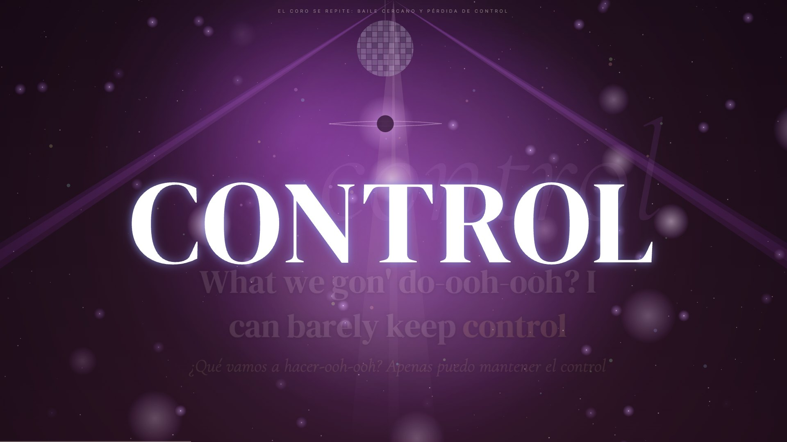
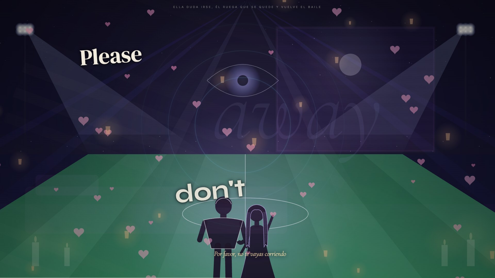
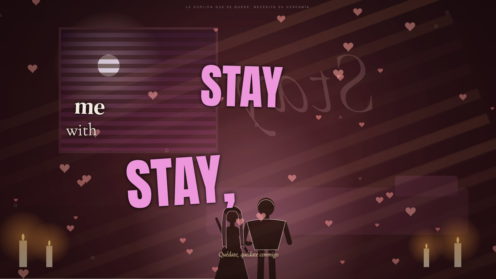
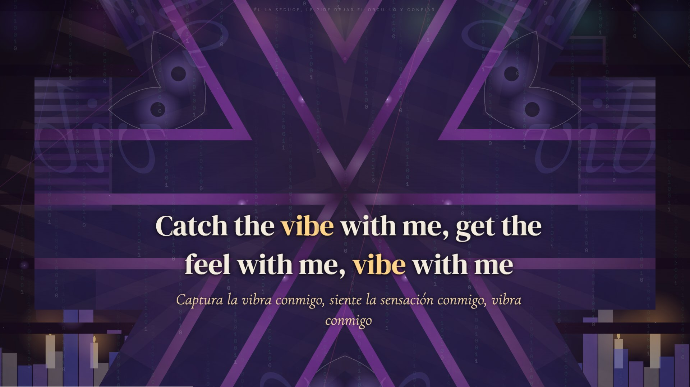
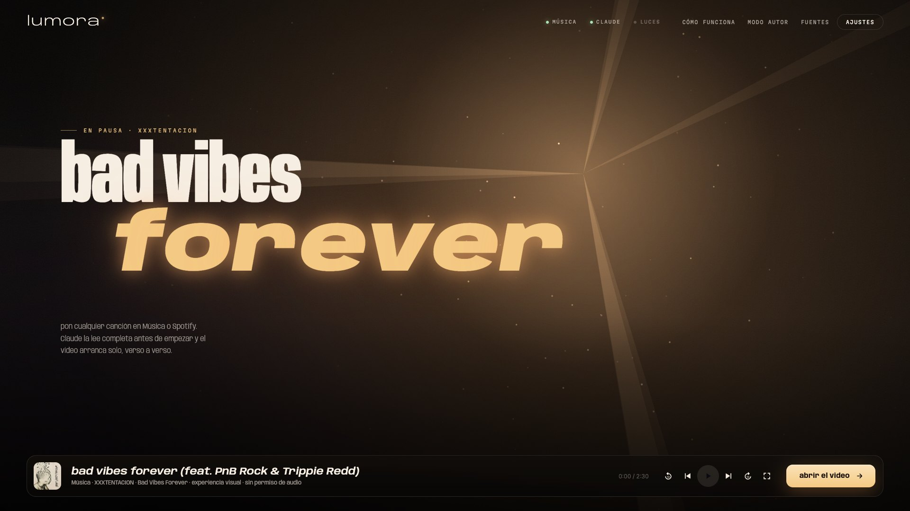
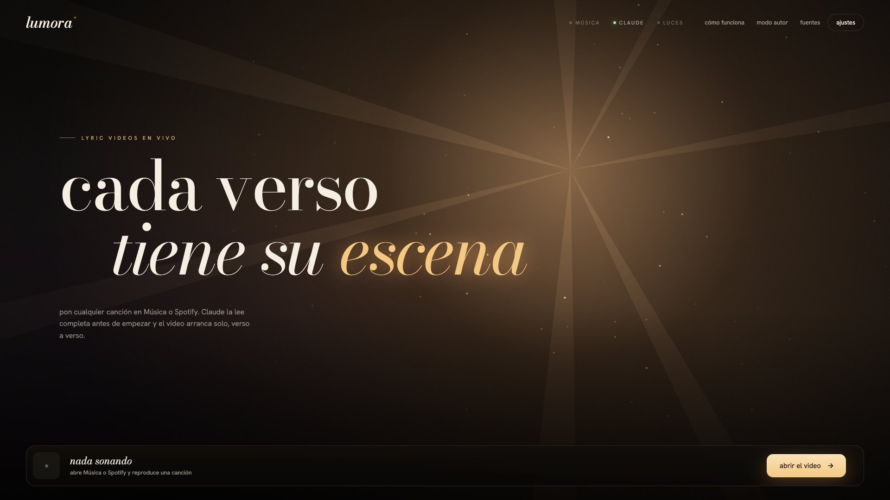
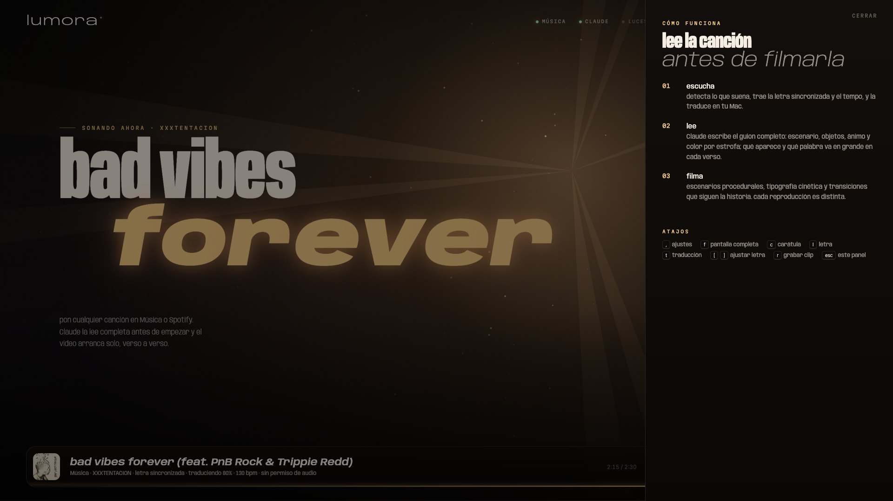
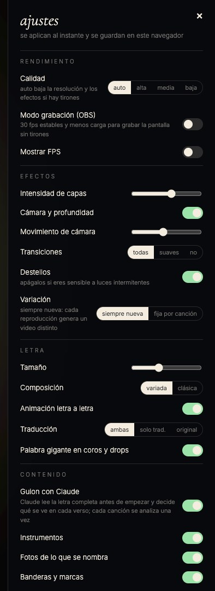
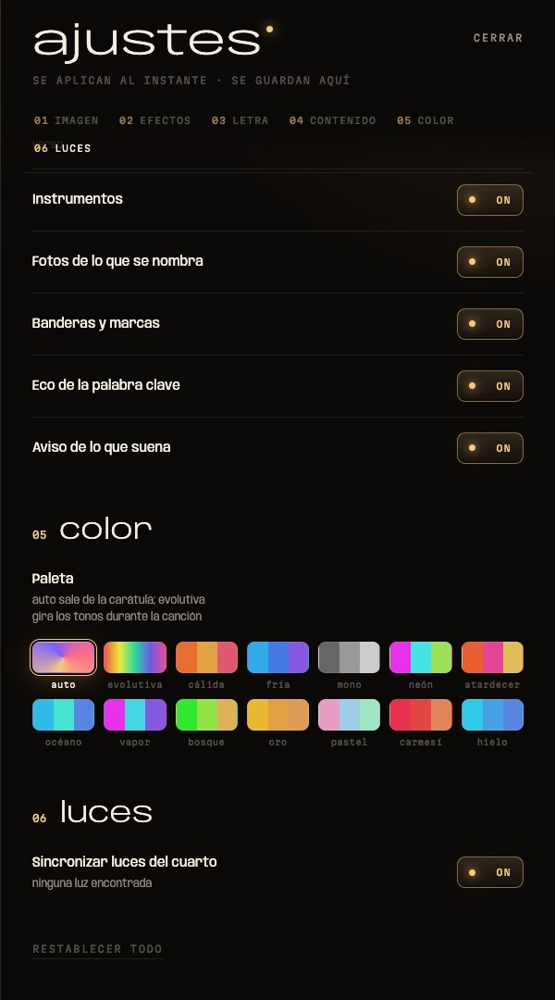

demo real, grabada con OBS · cuando la letra nombra a Magic Johnson aparece su foto; en su verso, el ícono de Jesús · activa el sonido en el control del video
lee la canciónantes de filmarla
la diferencia con un visualizador: lumora entiende la historia. el guion sale de la letra entera, con contexto, no de palabras sueltas.
suena algo
detecta la canción en Apple Music o Spotify, trae la letra sincronizada y el tempo, y la traduce en tu Mac.
Claude escribe el guion
escenario, objetos, ánimo, energía, color y transición por estrofa; qué aparece y qué palabra va en grande en cada verso.
el video sigue la letra
cada verso trae lo que nombra, el coro que vuelve repite sus imágenes y las luces del cuarto siguen la energía.
así se vecanciones reales
todas salen de la app corriendo, sin retoques.




una bienvenidaque ya es un video
mientras espera, las frases se escriben con luz. cuando suena algo, el título de la canción pasa a ser el titular y la carátula baja a la barra. el estado del sistema cabe en una línea; lo demás vive en paneles laterales.





ajustescomo una consola de luces
- canalesseis secciones numeradas que se encienden al pasar: imagen, efectos, letra, contenido, color y luces
- teclascada opción es una tecla con un led que se prende en dorado
- fadersintensidad, cámara y tamaño con escala y el valor exacto
- paletas14 muestras de color reales; auto sale de la carátula
qué hacetodo lo demás
20 escenarios procedurales
calle, playa, club, cielo, habitación, estadio, sistema, nebulosa, túnel, auroras y más, con más de 80 objetos animados.
tipografía de lyric video
10 composiciones, letra que entra letra por letra y palabra gigante en ganchos, coros y drops.
profundidad real
capas con parallax, cámara que respira con el beat y más de 35 transiciones según el carácter del cambio.
subtítulos traducidos
inglés ↔ español y portugués → español con el traductor de Apple, en tu Mac.
el mundo real
banderas, marcas con su logo oficial y fotos de las personas famosas que nombra la letra.
por artista y género
48 perfiles de artista y estilos para r&b, pop, rap, reguetón y electrónica, incluso sin letra.
luces Govee
color por compás, pulso en cada golpe, destello en los drops y brillo que sigue la intensidad.
clips en mp4
graba la duración que quieras; modo OBS con 30 fps estables para streams.
sin cuentas de música
se sincroniza con Apple Music y Spotify de escritorio, sin APIs de pago ni premium.
modo autor
Taxi Cab de twenty one pilots: un video hecho a mano escena por escena que reemplaza al generado.
instalaciónen tu mac
- macOS 26 o más nuevo · Apple Music o Spotify de escritorio
- Claude · tu suscripción vía Claude Code, o una clave de API
- Xcode Command Line Tools · para compilar el traductor y la escucha de audio
$ git clone https://github.com/kisnner26/lumora.git $ cd lumora && ./build.sh $ python3 bridge.py # abre 127.0.0.1:8888 y dale play
licenciacódigo visible
el uso personal es libre; el uso comercial necesita licencia.
gratis
- uso personal y sin fines comerciales
- estudiarlo y modificarlo
- PolyForm Noncommercial 1.0.0
licencia comercial
- streams y videos monetizados
- eventos, bares, pantallas
- integrarlo en otro producto